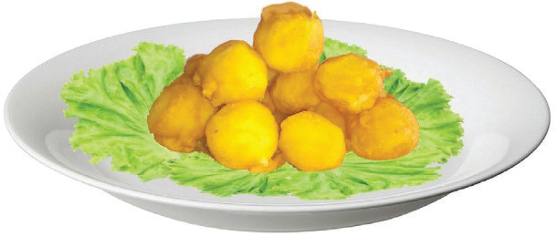

Kachori
Ingredients (serve 3 people)
5 medium-sized potatoes5 cloves of garlic¼ teaspoon powdered ginger½ teaspoon salt500 ml cooking oil1 stalk of coriander leaves
ground chilli1 ml lemon juice100 g wheat flour1 egg1 teaspoon turmeric
Method
- 1. Boil potatoes.
- 2. Remove the peels and mash them.
- 3. Add turmeric, grounded garlic, ginger, and chopped coriander leaves and mix well.
- 4. Add salt, lemon juice and grounded chilli and then mix them well.
- 5. Make balls and put them in a tray.
- 6. Toss the balls onto the batter. Then, deep fry them in the heated oil until well cooked.
- 7. Serve it as shown in Figure 4.29.


Activity 4. 19
Preparation of kachori
Prepare kachori by following the appropriate method.
(i) Explain the uses of the prepared food.
(ii) Explain the importance of boiling potatoes before peeling them.
89